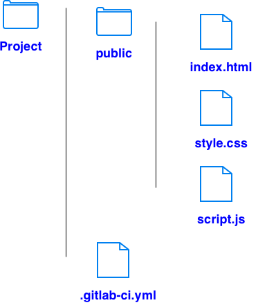

# .gitlab-ci.yml
stages:
- deploy
pages:
image: alpine:latest
stage: deploy
script:
- echo "Publishing static site"
artifacts:
paths:
- public # copy public folder in the repo to the public folder in artifacts
rules:
- if: $CI_COMMIT_REF_NAME == $CI_DEFAULT_BRANCH # Run this job only if the current branch name is main
# Create a project repo # Make the repo public # Make Pages accessible # Settings → General → Visibility, project features, permissions → Pages or Pages access control → Everyone # Push the code to the repo # https://[namespace].gitlab.io/[project-name]/ # GitLab generates a short to hide the namespace https://lin.chen2.gitlab.io/cyber9
# Create a project repo called [account].gitlab.io # lin.chen2.gitlab.io # Make the repo public # Make Pages accessible # Settings → General → Visibility, project features, permissions → Pages or Pages access control → Everyone # Push the code to the repo # https://[namespace].gitlab.io https://lin.chen2.gitlab.io